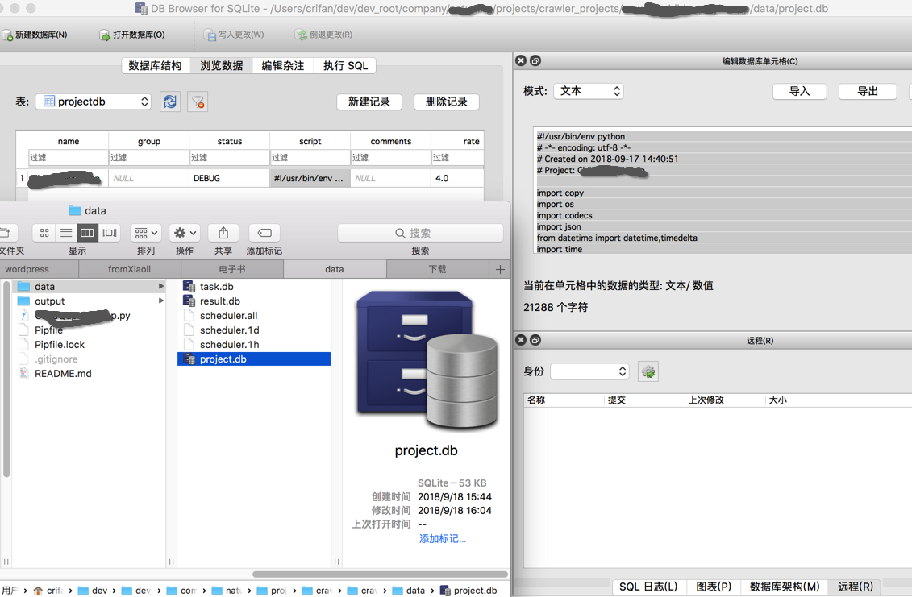
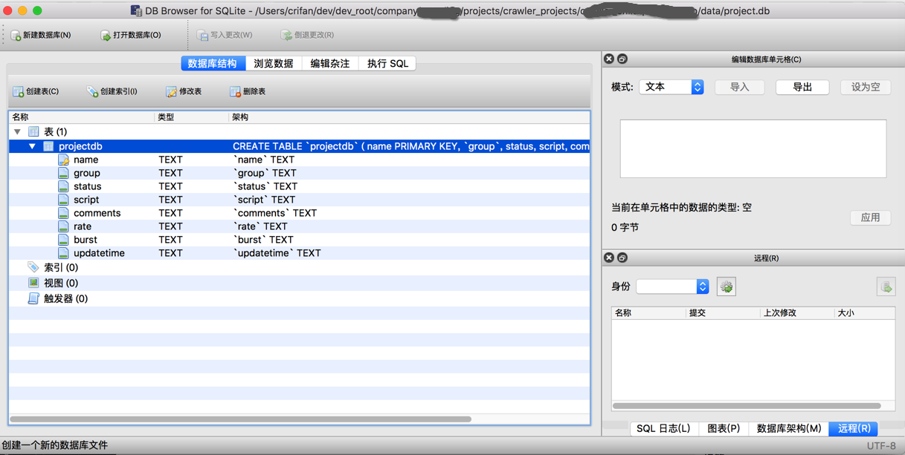
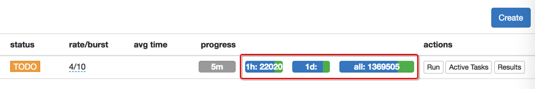

PySpider所在目录下的data目录
在你运行pyspider后，自动会在命令执行路径下生成data文件夹，其中包含几个（SQLite）文件：
project.db：保存了用户的爬虫项目相关信息，包括项目的Python代码- 比如用（SQlite）工具去查看，可以看到详细数据
- 比如Mac中的
DB Browser for SQLite查看的效果： Python代码：- 
- 对应数据库结构字段：
- 
result.db：项目运行的结果数据task.db：项目相关的任务信息- 其中如果开始运行爬虫，还会出现相关的调度信息：
scheduler.all,scheduler.1d,scheduler.1h：保存了任务执行后所有，1天，1小时内相关的信息，和WebUI中的progress中的all,1d,1h对应：- 
指定data目录
用data-path参数
- 方法1：配置
config.json中的data-path{ "data-path": "/root/xxx/crawler/pyspider/data", "webui": { "port": 7700, "username": "admin", "password": "yourPassword", "need-auth": true }, "scheduler": { "delete_time": 30 } } - 方式2：命令行传递参数
--data-path--data-path="your_data_folder_path"